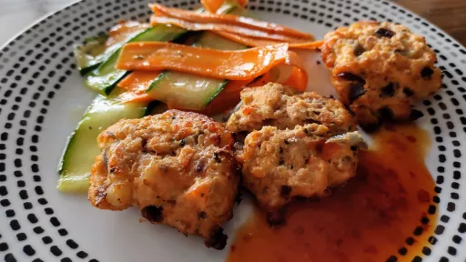

Thai-style fishcakes
20 mins
Serves 2
Dairy Free
Gluten Free

Here the fishcakes are paired with a ribbon salad, but you could also make bigger ones to eat as a burger, served in a lettuce wrap
Ingredients
-
2
skinless salmon fillets, cut into chunks
-
1
x 165 g pack raw peeled king prawns
-
½
red onion, finely chopped
-
1
clove garlic, crushed
-
1
tbsp Thai green curry paste
-
1
tbsp chopped coriander
-
2
tsp vegetable oil
-
½
cucumber
-
1
medium carrot, peeled
- juice of ½ lime, plus wedges to serve
-
1
tbsp chopped coriander
-
1
tbsp sweet chilli sauce, plus more to serve
Instructions
- Heat the grill to medium-high. Pulse the
salmon2
and two-thirds of the prawns1x 165 g pack
in a food processor until finely chopped but not paste-like. Roughly chop the remaining prawns1x 165 g pack
by hand.
- Tip the
salmon2
mix and the chopped prawns1x 165 g pack
into a bowl and add the onion½
, garlic1 clove
, curry paste1 tbsp
and coriander1 tbsp
, along with a good pinch of salt, and mix together well.
- Form the mixture into 4-6 smallish patties. Place these on a foil-lined baking sheet, brush with the
oil2 tsp
and grill for about 10 minutes, turning halfway, until golden and cooked through.
- Meanwhile, shave the
cucumber½
(discarding the seedy core) and carrot1 medium
with a vegetable peeler to get thin ribbons. Whisk the lime juice, coriander1 tbsp
and sweet chilli sauce1 tbsp
together, then add the ribbons and toss in the dressing. Serve with the salmon2
patties and more sweet chilli sauce1 tbsp
and lime wedges if you like.
-
kcal
481
-
fat
26.0 g
-
saturates
4.0 g
-
carbs
11.0 g
-
sugar
10.0 g
-
fibre
4.0 g
-
protein
48.0 g
-
salt
1.0 g
www.sainsburysmagazine.co.uk
Short Link
Long Link